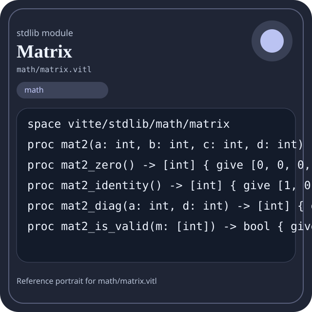

Stdlib module math/matrix.vitl
This page is a wiki-style reference for one concrete stdlib file. It explains what the file owns, where it fits in the family, and how to decide whether this is the right surface to depend on.

math/matrix.vitl.Family: math
Kind: public stdlib surface
Page style: this reference follows the same “encyclopedic card + portrait + usage contract” logic as the keyword pages, but for stdlib modules.
Summary
- Overview
- Purpose
- Taxonomy
- Implementation profile
- Top-level API inventory
- Position in family
- Declaration map
- Representative signatures
- How to use this module
- User example
- Keyword coverage
- Source shape
- Source landmarks
- Source organization
- Complete API catalog
- Integration boundaries
- Composition guidance
- Relationship table
- Neighbor modules
Overview
| Field | Value |
|---|---|
| Path | math/matrix.vitl |
| Family | math |
| Kind | public stdlib surface |
| Line count | 57 |
| Declared procedures | 53 |
| Declared forms/picks | 0 |
`math/matrix.vitl` is a public stdlib surface inside the `math` family. It should be read as one focused slice of the broader family responsibility: Arithmetic, algebra, comparison, calculus, geometry, modular arithmetic, number theory, probability, statistics, matrix, and vector helpers.
Purpose
This file should be chosen because of responsibility, not because its name “sounds close enough”. Inside the math family, it carries one focused part of the contract and keeps that responsibility separate from neighboring concerns.
- A scoring engine can compute aggregates in `math` while keeping I/O and transport elsewhere.
- A statistics or matrix chapter should explain the workflow around the computation, not just a single formula.
Taxonomy
Think of this page as a generated encyclopedia entry rather than a hand-written tutorial. The goal is to show what kind of module this is, how dense it is, and what reading strategy makes sense before depending on it.
- Large algorithm surface: this file exposes many procedures and likely acts as a domain toolkit rather than a single thin wrapper.
- Minimal top-level dependencies: the module reads as mostly self-contained from its opening declarations.
- Explicit export surface: the file ends with visible export declarations instead of relying only on implicit namespace discovery.
Implementation profile
This profile is inferred directly from the source text. It does not replace reading the file, but it tells you quickly whether the module is mostly declarative, loop-heavy, branch-heavy, or organized around many small exits.
| Signal | Count | What it suggests |
|---|---|---|
if | 28 | Branching density and local decision-making. |
while | 1 | Loop-heavy or iterative implementation style. |
for | 0 | Collection-style traversal at source level. |
match | 0 | Variant-driven branching or grammar-style decoding. |
let | 9 | Local state and intermediate value density. |
give | 80 | Number of explicit exit points and result shaping. |
Top-level API inventory
| Surface | Items |
|---|---|
| Procedures | mat2, mat2_zero, mat2_identity, mat2_diag, mat2_is_valid, mat2_clone, mat2_m11, mat2_m12, mat2_m21, mat2_m22, mat2_row0, mat2_row1 |
| Forms | none declared at top level |
| Picks | none declared at top level |
| Constants | none declared at top level |
| Exports | * |
Imported surfaces
This file does not advertise a top-level `use` surface in its opening declarations. That often means it is either self-contained or an aggregation layer.
Position in family
This file is module 10 of 21 in the math family when ordered by path. By procedure count it ranks 10, and by line count it ranks 20. Those ranks are useful as rough signals of breadth, not as quality judgments.
Declaration map
The declaration map turns raw source into a scan-friendly catalog. It is useful when the file is large enough that a reader wants to orient by kinds of surfaces first.
| Line | Name | Kind | Role |
|---|---|---|---|
| 1 | vitte/stdlib/math/matrix | space | Declares the namespace that anchors this file in the stdlib tree. |
| 3 | mat2 | proc | Represents one top-level surface in the file contract and should be read as part of the module boundary. |
| 4 | mat2_zero | proc | Represents one top-level surface in the file contract and should be read as part of the module boundary. |
| 5 | mat2_identity | proc | Represents one top-level surface in the file contract and should be read as part of the module boundary. |
| 6 | mat2_diag | proc | Represents one top-level surface in the file contract and should be read as part of the module boundary. |
| 7 | mat2_is_valid | proc | Represents one top-level surface in the file contract and should be read as part of the module boundary. |
| 8 | mat2_clone | proc | Represents one top-level surface in the file contract and should be read as part of the module boundary. |
| 9 | mat2_m11 | proc | Represents one top-level surface in the file contract and should be read as part of the module boundary. |
| 10 | mat2_m12 | proc | Represents one top-level surface in the file contract and should be read as part of the module boundary. |
| 11 | mat2_m21 | proc | Represents one top-level surface in the file contract and should be read as part of the module boundary. |
| 12 | mat2_m22 | proc | Represents one top-level surface in the file contract and should be read as part of the module boundary. |
| 13 | mat2_row0 | proc | Represents one top-level surface in the file contract and should be read as part of the module boundary. |
| 14 | mat2_row1 | proc | Represents one top-level surface in the file contract and should be read as part of the module boundary. |
| 15 | mat2_col0 | proc | Represents one top-level surface in the file contract and should be read as part of the module boundary. |
| 16 | mat2_col1 | proc | Represents one top-level surface in the file contract and should be read as part of the module boundary. |
| 17 | mat2_equal | proc | Represents one top-level surface in the file contract and should be read as part of the module boundary. |
| 18 | mat2_is_zero | proc | Represents one top-level surface in the file contract and should be read as part of the module boundary. |
| 19 | mat2_is_identity | proc | Represents one top-level surface in the file contract and should be read as part of the module boundary. |
| 20 | mat2_is_diagonal | proc | Represents one top-level surface in the file contract and should be read as part of the module boundary. |
| 21 | mat2_is_symmetric | proc | Represents one top-level surface in the file contract and should be read as part of the module boundary. |
| 22 | mat2_is_upper_triangular | proc | Represents one top-level surface in the file contract and should be read as part of the module boundary. |
| 23 | mat2_is_lower_triangular | proc | Represents one top-level surface in the file contract and should be read as part of the module boundary. |
| 24 | mat2_add | proc | Represents one top-level surface in the file contract and should be read as part of the module boundary. |
| 25 | mat2_sub | proc | Represents one top-level surface in the file contract and should be read as part of the module boundary. |
| 26 | mat2_neg | proc | Represents one top-level surface in the file contract and should be read as part of the module boundary. |
| 27 | mat2_scale | proc | Represents one top-level surface in the file contract and should be read as part of the module boundary. |
| 28 | mat2_hadamard | proc | Represents one top-level surface in the file contract and should be read as part of the module boundary. |
| 29 | mat2_mul | proc | Represents one top-level surface in the file contract and should be read as part of the module boundary. |
| 30 | mat2_mul_vec2 | proc | Represents one top-level surface in the file contract and should be read as part of the module boundary. |
| 31 | vec2_mul_mat2 | proc | Represents one top-level surface in the file contract and should be read as part of the module boundary. |
| 32 | mat2_trace | proc | Represents one top-level surface in the file contract and should be read as part of the module boundary. |
| 33 | mat2_det | proc | Represents one top-level surface in the file contract and should be read as part of the module boundary. |
| 34 | mat2_transpose | proc | Represents one top-level surface in the file contract and should be read as part of the module boundary. |
| 35 | mat2_adjugate | proc | Represents one top-level surface in the file contract and should be read as part of the module boundary. |
| 36 | mat2_cofactor | proc | Represents one top-level surface in the file contract and should be read as part of the module boundary. |
| 37 | mat2_inv | proc | Represents one top-level surface in the file contract and should be read as part of the module boundary. |
| 38 | mat2_has_inverse | proc | Represents one top-level surface in the file contract and should be read as part of the module boundary. |
| 39 | mat2_pow | proc | Represents one top-level surface in the file contract and should be read as part of the module boundary. |
| 40 | mod_norm | proc | Represents one top-level surface in the file contract and should be read as part of the module boundary. |
| 41 | mat2_mod_norm | proc | Represents one top-level surface in the file contract and should be read as part of the module boundary. |
| 42 | mat2_add_mod | proc | Represents one top-level surface in the file contract and should be read as part of the module boundary. |
| 43 | mat2_sub_mod | proc | Represents one top-level surface in the file contract and should be read as part of the module boundary. |
| 44 | mat2_scale_mod | proc | Represents one top-level surface in the file contract and should be read as part of the module boundary. |
| 45 | mat2_mul_mod | proc | Represents one top-level surface in the file contract and should be read as part of the module boundary. |
| 46 | mat2_det_mod | proc | Represents one top-level surface in the file contract and should be read as part of the module boundary. |
| 47 | mat2_inv_mod | proc | Represents one top-level surface in the file contract and should be read as part of the module boundary. |
| 48 | mat2_pow_mod | proc | Represents one top-level surface in the file contract and should be read as part of the module boundary. |
| 49 | mat2_fibonacci_matrix | proc | Owns a concrete data shape or the operations that maintain it. |
| 50 | mat2_fib | proc | Represents one top-level surface in the file contract and should be read as part of the module boundary. |
| 51 | mat2_fib_mod | proc | Represents one top-level surface in the file contract and should be read as part of the module boundary. |
| 52 | mat2_id | proc | Represents one top-level surface in the file contract and should be read as part of the module boundary. |
| 53 | matrix_version | proc | Owns a concrete data shape or the operations that maintain it. |
| 54 | matrix_ready | proc | Owns a concrete data shape or the operations that maintain it. |
| 55 | matrix_selftest | proc | Owns a concrete data shape or the operations that maintain it. |
The table is exhaustive for top-level declarations of the selected kinds. This file declares 54 matching surfaces.
Representative signatures
These signatures are shown in source order so the page keeps the feel of a reference manual, not just a keyword cloud.
proc mat2(a: int, b: int, c: int, d: int) -> [int] { give [a, b, c, d] }(line 3)proc mat2_zero() -> [int] { give [0, 0, 0, 0] }(line 4)proc mat2_identity() -> [int] { give [1, 0, 0, 1] }(line 5)proc mat2_diag(a: int, d: int) -> [int] { give [a, 0, 0, d] }(line 6)proc mat2_is_valid(m: [int]) -> bool { give m.len == 4 }(line 7)proc mat2_clone(m: [int]) -> [int] { give m }(line 8)proc mat2_m11(m: [int]) -> int { if m.len != 4 { give 0 } give m[0] }(line 9)proc mat2_m12(m: [int]) -> int { if m.len != 4 { give 0 } give m[1] }(line 10)proc mat2_m21(m: [int]) -> int { if m.len != 4 { give 0 } give m[2] }(line 11)proc mat2_m22(m: [int]) -> int { if m.len != 4 { give 0 } give m[3] }(line 12)proc mat2_row0(m: [int]) -> [int] { if m.len != 4 { give [] } give [m[0], m[1]] }(line 13)proc mat2_row1(m: [int]) -> [int] { if m.len != 4 { give [] } give [m[2], m[3]] }(line 14)proc mat2_col0(m: [int]) -> [int] { if m.len != 4 { give [] } give [m[0], m[2]] }(line 15)proc mat2_col1(m: [int]) -> [int] { if m.len != 4 { give [] } give [m[1], m[3]] }(line 16)proc mat2_equal(a: [int], b: [int]) -> bool { give a.len == 4 and b.len == 4 and a[0] == b[0] and a[1] == b[1] and a[2] == b[2] and a[3] == b[3] }(line 17)proc mat2_is_zero(m: [int]) -> bool { give mat2_equal(m, mat2_zero()) }(line 18)proc mat2_is_identity(m: [int]) -> bool { give mat2_equal(m, mat2_identity()) }(line 19)proc mat2_is_diagonal(m: [int]) -> bool { give m.len == 4 and m[1] == 0 and m[2] == 0 }(line 20)
The list is intentionally capped here; the source file declares 53 matching signatures in total.
How to use this module
Start by reading the file as an ownership boundary. Ask three questions: what enters this module, what stable types or procedures it exports, and what adjacent module should stay outside of it.
- Read
spaceand top-level imports first so the ownership boundary ofmath/matrix.vitlis explicit. - Traverse procedures in source order; the early helpers usually explain the naming and numeric conventions used later.
- Only after that compare neighbor modules, because the right boundary choice matters more than memorizing one helper name.
User example
This example is generated from the actual stdlib module surface. Its job is not to be the smallest snippet possible; its job is to show a realistic consumer-shaped file that exercises the module and mirrors the language keywords the module itself relies on.
space demo/math_matrix
proc run_example() -> string {
let entries = mat2(1, 1, 1, 1)
let ready: bool = mat2_is_valid([1, 2, 3])
let stable: bool = ready and true
let fallback: bool = ready or false
let idx: int = 0
let count: int = 0
while idx < entries.len {
set count = count + 1
set idx = idx + 1
}
if not ready {
give "not-ready"
}
give "ok"
}
export run_exampleKeyword coverage
This table makes the “all keywords of the module” requirement auditable. It compares the detected Vitte keywords in the source file with the generated consumer example above.
| Keyword | Present in module source | Used in generated user example |
|---|---|---|
space | yes | yes |
proc | yes | yes |
let | yes | yes |
set | yes | yes |
if | yes | yes |
while | yes | yes |
give | yes | yes |
export | yes | yes |
true | yes | yes |
and | yes | yes |
or | yes | yes |
not | yes | yes |
The generated snippet exercises every detected Vitte keyword used by this module.
Source shape
space vitte/stdlib/math/matrix
proc mat2(a: int, b: int, c: int, d: int) -> [int] { give [a, b, c, d] }
proc mat2_zero() -> [int] { give [0, 0, 0, 0] }
proc mat2_identity() -> [int] { give [1, 0, 0, 1] }
proc mat2_diag(a: int, d: int) -> [int] { give [a, 0, 0, d] }
proc mat2_is_valid(m: [int]) -> bool { give m.len == 4 }
proc mat2_clone(m: [int]) -> [int] { give m }
proc mat2_m11(m: [int]) -> int { if m.len != 4 { give 0 } give m[0] }
proc mat2_m12(m: [int]) -> int { if m.len != 4 { give 0 } give m[1] }
proc mat2_m21(m: [int]) -> int { if m.len != 4 { give 0 } give m[2] }The excerpt is not meant to replace the file. It exists to make the module recognizable at first glance, the same way a Wikipedia infobox helps the reader orient before reading the whole article.
Source landmarks
Large files are easier to retain when they have visible landmarks. When the source contains explicit section banners, they are surfaced here; otherwise the first major declarations are used as anchors.
- Line 1:
space vitte/stdlib/math/matrix - Line 3:
proc mat2(a: int, b: int, c: int, d: int) -> [int] { give [a, b, c, d] } - Line 4:
proc mat2_zero() -> [int] { give [0, 0, 0, 0] } - Line 5:
proc mat2_identity() -> [int] { give [1, 0, 0, 1] } - Line 6:
proc mat2_diag(a: int, d: int) -> [int] { give [a, 0, 0, d] } - Line 7:
proc mat2_is_valid(m: [int]) -> bool { give m.len == 4 } - Line 8:
proc mat2_clone(m: [int]) -> [int] { give m } - Line 9:
proc mat2_m11(m: [int]) -> int { if m.len != 4 { give 0 } give m[0] }
Source organization
When a file carries its own internal chaptering, those chapters usually reveal the intended reading order better than a flat symbol list. This section reconstructs that organization from the source itself.
File surfaces
Top-level items: 55. Procedures: 53. Data surfaces: 0. Constants: 0.
First visible names: vitte/stdlib/math/matrix, mat2, mat2_zero, mat2_identity, mat2_diag, mat2_is_valid, mat2_clone, mat2_m11, mat2_m12, mat2_m21
Complete API catalog
This catalog is the exhaustive file-level index for the module. It is intentionally closer to a generated encyclopedia appendix than to a tutorial summary.
Procedures
| Line | Name | Signature | Role |
|---|---|---|---|
| 3 | mat2 | proc mat2(a: int, b: int, c: int, d: int) -> [int] { give [a, b, c, d] } | Represents one top-level surface in the file contract and should be read as part of the module boundary. |
| 4 | mat2_zero | proc mat2_zero() -> [int] { give [0, 0, 0, 0] } | Represents one top-level surface in the file contract and should be read as part of the module boundary. |
| 5 | mat2_identity | proc mat2_identity() -> [int] { give [1, 0, 0, 1] } | Represents one top-level surface in the file contract and should be read as part of the module boundary. |
| 6 | mat2_diag | proc mat2_diag(a: int, d: int) -> [int] { give [a, 0, 0, d] } | Represents one top-level surface in the file contract and should be read as part of the module boundary. |
| 7 | mat2_is_valid | proc mat2_is_valid(m: [int]) -> bool { give m.len == 4 } | Represents one top-level surface in the file contract and should be read as part of the module boundary. |
| 8 | mat2_clone | proc mat2_clone(m: [int]) -> [int] { give m } | Represents one top-level surface in the file contract and should be read as part of the module boundary. |
| 9 | mat2_m11 | proc mat2_m11(m: [int]) -> int { if m.len != 4 { give 0 } give m[0] } | Represents one top-level surface in the file contract and should be read as part of the module boundary. |
| 10 | mat2_m12 | proc mat2_m12(m: [int]) -> int { if m.len != 4 { give 0 } give m[1] } | Represents one top-level surface in the file contract and should be read as part of the module boundary. |
| 11 | mat2_m21 | proc mat2_m21(m: [int]) -> int { if m.len != 4 { give 0 } give m[2] } | Represents one top-level surface in the file contract and should be read as part of the module boundary. |
| 12 | mat2_m22 | proc mat2_m22(m: [int]) -> int { if m.len != 4 { give 0 } give m[3] } | Represents one top-level surface in the file contract and should be read as part of the module boundary. |
| 13 | mat2_row0 | proc mat2_row0(m: [int]) -> [int] { if m.len != 4 { give [] } give [m[0], m[1]] } | Represents one top-level surface in the file contract and should be read as part of the module boundary. |
| 14 | mat2_row1 | proc mat2_row1(m: [int]) -> [int] { if m.len != 4 { give [] } give [m[2], m[3]] } | Represents one top-level surface in the file contract and should be read as part of the module boundary. |
| 15 | mat2_col0 | proc mat2_col0(m: [int]) -> [int] { if m.len != 4 { give [] } give [m[0], m[2]] } | Represents one top-level surface in the file contract and should be read as part of the module boundary. |
| 16 | mat2_col1 | proc mat2_col1(m: [int]) -> [int] { if m.len != 4 { give [] } give [m[1], m[3]] } | Represents one top-level surface in the file contract and should be read as part of the module boundary. |
| 17 | mat2_equal | proc mat2_equal(a: [int], b: [int]) -> bool { give a.len == 4 and b.len == 4 and a[0] == b[0] and a[1] == b[1] and a[2] == b[2] and a[3] == b[3] } | Represents one top-level surface in the file contract and should be read as part of the module boundary. |
| 18 | mat2_is_zero | proc mat2_is_zero(m: [int]) -> bool { give mat2_equal(m, mat2_zero()) } | Represents one top-level surface in the file contract and should be read as part of the module boundary. |
| 19 | mat2_is_identity | proc mat2_is_identity(m: [int]) -> bool { give mat2_equal(m, mat2_identity()) } | Represents one top-level surface in the file contract and should be read as part of the module boundary. |
| 20 | mat2_is_diagonal | proc mat2_is_diagonal(m: [int]) -> bool { give m.len == 4 and m[1] == 0 and m[2] == 0 } | Represents one top-level surface in the file contract and should be read as part of the module boundary. |
| 21 | mat2_is_symmetric | proc mat2_is_symmetric(m: [int]) -> bool { give m.len == 4 and m[1] == m[2] } | Represents one top-level surface in the file contract and should be read as part of the module boundary. |
| 22 | mat2_is_upper_triangular | proc mat2_is_upper_triangular(m: [int]) -> bool { give m.len == 4 and m[2] == 0 } | Represents one top-level surface in the file contract and should be read as part of the module boundary. |
| 23 | mat2_is_lower_triangular | proc mat2_is_lower_triangular(m: [int]) -> bool { give m.len == 4 and m[1] == 0 } | Represents one top-level surface in the file contract and should be read as part of the module boundary. |
| 24 | mat2_add | proc mat2_add(a: [int], b: [int]) -> [int] { if not mat2_is_valid(a) or not mat2_is_valid(b) { give [] } give [a[0] + b[0], a[1] + b[1], a[2] + b[2], a[3] + b[3]] } | Represents one top-level surface in the file contract and should be read as part of the module boundary. |
| 25 | mat2_sub | proc mat2_sub(a: [int], b: [int]) -> [int] { if not mat2_is_valid(a) or not mat2_is_valid(b) { give [] } give [a[0] - b[0], a[1] - b[1], a[2] - b[2], a[3] - b[3]] } | Represents one top-level surface in the file contract and should be read as part of the module boundary. |
| 26 | mat2_neg | proc mat2_neg(m: [int]) -> [int] { if not mat2_is_valid(m) { give [] } give [0 - m[0], 0 - m[1], 0 - m[2], 0 - m[3]] } | Represents one top-level surface in the file contract and should be read as part of the module boundary. |
| 27 | mat2_scale | proc mat2_scale(m: [int], k: int) -> [int] { if not mat2_is_valid(m) { give [] } give [m[0] * k, m[1] * k, m[2] * k, m[3] * k] } | Represents one top-level surface in the file contract and should be read as part of the module boundary. |
| 28 | mat2_hadamard | proc mat2_hadamard(a: [int], b: [int]) -> [int] { if not mat2_is_valid(a) or not mat2_is_valid(b) { give [] } give [a[0] * b[0], a[1] * b[1], a[2] * b[2], a[3] * b[3]] } | Represents one top-level surface in the file contract and should be read as part of the module boundary. |
| 29 | mat2_mul | proc mat2_mul(a: [int], b: [int]) -> [int] { if not mat2_is_valid(a) or not mat2_is_valid(b) { give [] } give [a[0] * b[0] + a[1] * b[2], a[0] * b[1] + a[1] * b[3], a[2] * b[0] + a[3] * b[2], a[2] * b[1] + a[3] * b[3]] } | Represents one top-level surface in the file contract and should be read as part of the module boundary. |
| 30 | mat2_mul_vec2 | proc mat2_mul_vec2(m: [int], v: [int]) -> [int] { if not mat2_is_valid(m) or v.len != 2 { give [] } give [m[0] * v[0] + m[1] * v[1], m[2] * v[0] + m[3] * v[1]] } | Represents one top-level surface in the file contract and should be read as part of the module boundary. |
| 31 | vec2_mul_mat2 | proc vec2_mul_mat2(v: [int], m: [int]) -> [int] { if not mat2_is_valid(m) or v.len != 2 { give [] } give [v[0] * m[0] + v[1] * m[2], v[0] * m[1] + v[1] * m[3]] } | Represents one top-level surface in the file contract and should be read as part of the module boundary. |
| 32 | mat2_trace | proc mat2_trace(m: [int]) -> int { if not mat2_is_valid(m) { give 0 } give m[0] + m[3] } | Represents one top-level surface in the file contract and should be read as part of the module boundary. |
| 33 | mat2_det | proc mat2_det(m: [int]) -> int { if not mat2_is_valid(m) { give 0 } give m[0] * m[3] - m[1] * m[2] } | Represents one top-level surface in the file contract and should be read as part of the module boundary. |
| 34 | mat2_transpose | proc mat2_transpose(m: [int]) -> [int] { if not mat2_is_valid(m) { give [] } give [m[0], m[2], m[1], m[3]] } | Represents one top-level surface in the file contract and should be read as part of the module boundary. |
| 35 | mat2_adjugate | proc mat2_adjugate(m: [int]) -> [int] { if not mat2_is_valid(m) { give [] } give [m[3], 0 - m[1], 0 - m[2], m[0]] } | Represents one top-level surface in the file contract and should be read as part of the module boundary. |
| 36 | mat2_cofactor | proc mat2_cofactor(m: [int]) -> [int] { give mat2_adjugate(m) } | Represents one top-level surface in the file contract and should be read as part of the module boundary. |
| 37 | mat2_inv | proc mat2_inv(m: [int]) -> [int] { let det: int = mat2_det(m) if det == 0 { give [] } let adj: [int] = mat2_adjugate(m) give [adj[0] / det, adj[1] / det, adj[2] / det, adj[3] / det] } | Represents one top-level surface in the file contract and should be read as part of the module boundary. |
| 38 | mat2_has_inverse | proc mat2_has_inverse(m: [int]) -> bool { give mat2_det(m) != 0 } | Represents one top-level surface in the file contract and should be read as part of the module boundary. |
| 39 | mat2_pow | proc mat2_pow(m: [int], exp: int) -> [int] { if exp < 0 { give [] } let out: [int] = mat2_identity() let base: [int] = m let e: int = exp while e > 0 { if e % 2 == 1 { set out = mat2_mul(out, base) } set base = mat2_mul(base, base); set e = e / 2 } give out } | Represents one top-level surface in the file contract and should be read as part of the module boundary. |
| 40 | mod_norm | proc mod_norm(value: int, modulus: int) -> int { if modulus <= 0 { give 0 } let out: int = value % modulus if out < 0 { give out + modulus } give out } | Represents one top-level surface in the file contract and should be read as part of the module boundary. |
| 41 | mat2_mod_norm | proc mat2_mod_norm(m: [int], modulus: int) -> [int] { if not mat2_is_valid(m) { give [] } give [mod_norm(m[0], modulus), mod_norm(m[1], modulus), mod_norm(m[2], modulus), mod_norm(m[3], modulus)] } | Represents one top-level surface in the file contract and should be read as part of the module boundary. |
| 42 | mat2_add_mod | proc mat2_add_mod(a: [int], b: [int], modulus: int) -> [int] { give mat2_mod_norm(mat2_add(a, b), modulus) } | Represents one top-level surface in the file contract and should be read as part of the module boundary. |
| 43 | mat2_sub_mod | proc mat2_sub_mod(a: [int], b: [int], modulus: int) -> [int] { give mat2_mod_norm(mat2_sub(a, b), modulus) } | Represents one top-level surface in the file contract and should be read as part of the module boundary. |
| 44 | mat2_scale_mod | proc mat2_scale_mod(m: [int], k: int, modulus: int) -> [int] { give mat2_mod_norm(mat2_scale(m, k), modulus) } | Represents one top-level surface in the file contract and should be read as part of the module boundary. |
| 45 | mat2_mul_mod | proc mat2_mul_mod(a: [int], b: [int], modulus: int) -> [int] { give mat2_mod_norm(mat2_mul(a, b), modulus) } | Represents one top-level surface in the file contract and should be read as part of the module boundary. |
| 46 | mat2_det_mod | proc mat2_det_mod(m: [int], modulus: int) -> int { give mod_norm(mat2_det(m), modulus) } | Represents one top-level surface in the file contract and should be read as part of the module boundary. |
| 47 | mat2_inv_mod | proc mat2_inv_mod(m: [int], modulus: int) -> [int] { give mat2_mod_norm(mat2_inv(m), modulus) } | Represents one top-level surface in the file contract and should be read as part of the module boundary. |
| 48 | mat2_pow_mod | proc mat2_pow_mod(m: [int], exp: int, modulus: int) -> [int] { give mat2_mod_norm(mat2_pow(m, exp), modulus) } | Represents one top-level surface in the file contract and should be read as part of the module boundary. |
| 49 | mat2_fibonacci_matrix | proc mat2_fibonacci_matrix() -> [int] { give [1, 1, 1, 0] } | Owns a concrete data shape or the operations that maintain it. |
| 50 | mat2_fib | proc mat2_fib(n: int) -> int { if n <= 0 { give 0 } if n == 1 { give 1 } let p: [int] = mat2_pow(mat2_fibonacci_matrix(), n - 1) give p[0] } | Represents one top-level surface in the file contract and should be read as part of the module boundary. |
| 51 | mat2_fib_mod | proc mat2_fib_mod(n: int, modulus: int) -> int { give mod_norm(mat2_fib(n), modulus) } | Represents one top-level surface in the file contract and should be read as part of the module boundary. |
| 52 | mat2_id | proc mat2_id() -> [int] { give mat2_identity() } | Represents one top-level surface in the file contract and should be read as part of the module boundary. |
| 53 | matrix_version | proc matrix_version() -> string { give "max-1" } | Owns a concrete data shape or the operations that maintain it. |
| 54 | matrix_ready | proc matrix_ready() -> bool { give true } | Owns a concrete data shape or the operations that maintain it. |
| 55 | matrix_selftest | proc matrix_selftest() -> bool { let m: [int] = mat2(1, 2, 3, 4) let inv: [int] = mat2_inv(mat2(2, 0, 0, 2)) give matrix_ready() and matrix_version() == "max-1" and mat2_det(m) == -2 and mat2_trace(m) == 5 and mat2_mul_vec2(m, [1, 1])[0] == 3 and mat2_has_inverse(mat2(2, 0, 0, 2)) and inv.len == 4 and mat2_fib(8) == 21 } | Owns a concrete data shape or the operations that maintain it. |
Exports
| Line | Name | Signature | Role |
|---|---|---|---|
| 57 | * | export * | Re-exports surfaces that the module wants to expose as part of its public boundary. |
Integration boundaries
Within math, this file should remain focused. If a future helper changes the host boundary, scheduling boundary, or data-shape boundary, it probably belongs in a neighbor module instead of being added here by convenience.
- Family responsibility: Arithmetic, algebra, comparison, calculus, geometry, modular arithmetic, number theory, probability, statistics, matrix, and vector helpers.
- Family architecture role: Use `math` when the transformation itself is the feature. This family exists so algorithmic intent stays visible and testable.
Composition guidance
Choose this module when
- Choose
math/matrix.vitlwhen the main question is owned by this module rather than by transport, storage, orchestration, or user-interface code. - A scoring engine can compute aggregates in `math` while keeping I/O and transport elsewhere.
- A statistics or matrix chapter should explain the workflow around the computation, not just a single formula.
Pause before extending it when
- Avoid extending this file when the new helper mostly changes the boundary to host I/O, runtime coordination, or foreign integration instead of staying inside
math. - Check nearby modules such as
math/algebra.vitl,math/arithmetic.vitl,math/arrays.vitlbefore adding convenience wrappers here.
Relationship table
This table keeps the page closer to a real encyclopedia entry: a module is easier to understand when compared with its nearest alternatives in the same family.
| Neighbor | Procedures | Data surfaces | Why compare it |
|---|---|---|---|
math/algebra.vitl | 14 | 0 | Shares the same family boundary but carries a distinct slice of responsibility. |
math/arithmetic.vitl | 72 | 2 | Shares the same family boundary but carries a distinct slice of responsibility. |
math/arrays.vitl | 83 | 2 | Shares the same family boundary but carries a distinct slice of responsibility. |
math/calculus.vitl | 56 | 3 | Shares the same family boundary but carries a distinct slice of responsibility. |
math/comparison.vitl | 47 | 0 | Shares the same family boundary but carries a distinct slice of responsibility. |
math/complex.vitl | 49 | 0 | Shares the same family boundary but carries a distinct slice of responsibility. |
math/geometry.vitl | 72 | 0 | Shares the same family boundary but carries a distinct slice of responsibility. |
math/logic.vitl | 20 | 0 | Shares the same family boundary but carries a distinct slice of responsibility. |